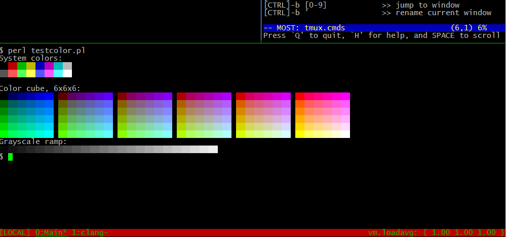

Configuring FreeBSD with Tmux
Tags:I just replaced gnu screen with tmux, a newer and better-written terminal multiplexer. This was pretty much an all-day activity on FreeBSD due the research, reading and mucking about. But it’s such an important shell utility, and the configuration time is worth it. I hope these steps can help you with this task.
First, you’ll need to install tmux using pkg install tmux or make install in /usr/ports/sysutils/tmux.
To get the most out of tmux graphically, you will need the following export placed in .bashrc or whatever startup file is to your liking:
1 2 3 | export TERM=screen-256color echo $TERM screen-256color |
The reason for this? color. Run this little perl script at Simple Life, Complicated Mind to verify your terminal is doing 256 colors. You should see a nice grid like this:

If you don’t get that, continue on with configuration, and run it again. The next configuration we need to do is for the ~/.tmux.conf :
1 2 3 4 5 6 7 8 | set -g default-terminal screen-256color set -g status-bg red set -g status-fg green set -g status-right '#(sysctl vm.loadavg)' setw -g window-status-current-attr underscore bind r source-file ~/.tmux.conf setw -g utf8 on set -g status-utf8 on |
The configuration file above sets your default terminal type, a few items on your status bar regarding colors and content. A function to reload tmux with a forced read of this config file is bound to [CTRL]-b r, usable from within a tmux session. It prevents you from having to exit and re-enter tmux again to test a particular configuration option. The last two options should work with UTF-8 encoding if you’re using the right terminal. Leaving them in will do no harm.
And I guess that brings us to an embarrasing oddity of Putty and Tmux which has caused some pain with UTF-8. If you’re using Putty, just turn-off UTF-8 encoding under the Putty config window Window > Translation. Select ISO-8859-1 if you don’t need to read other languages in the terminal, otherwise you’ll get «Poor Man’s» graphics separating your panels.
If you’d like more detail on tmux, check out Mindfuzz for a nice tmux config or at ijun.org, a pretty complete tutorial for FreeBSD.